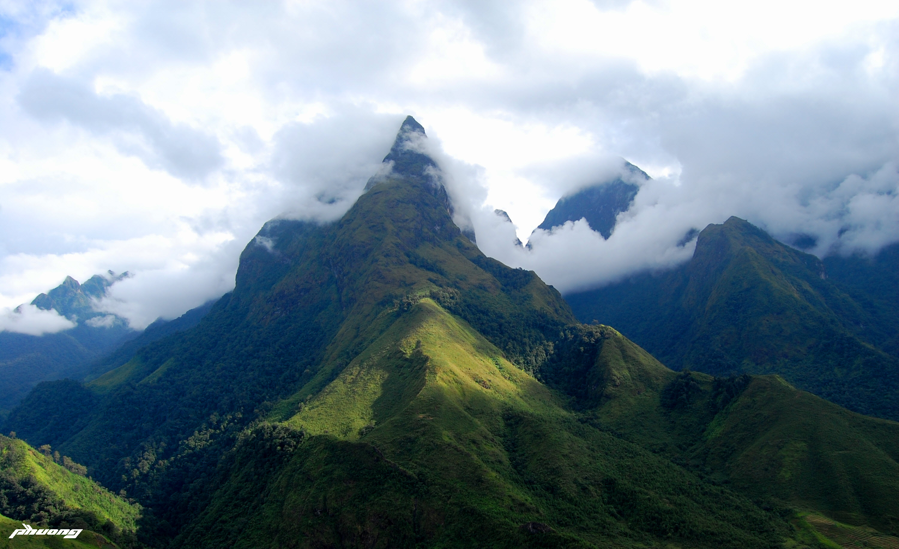
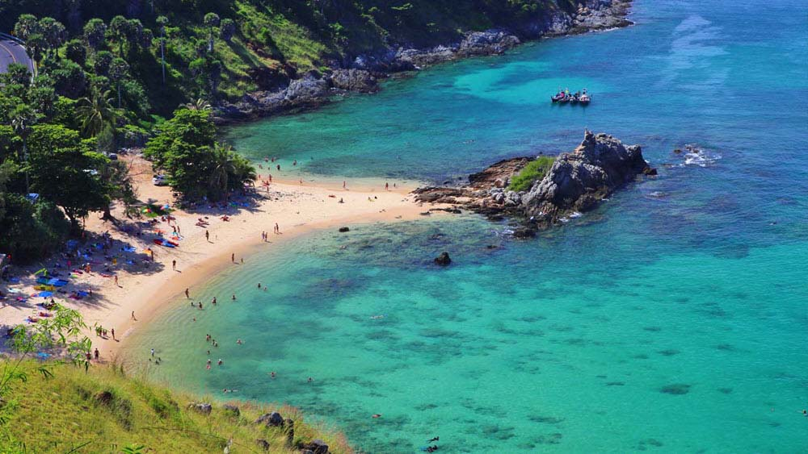

Mountain - Núi
- 1. Núi, những đỉnh cao hùng vĩ đứng giữa bầu trời, là những bức tranh tự nhiên tuyệt vời, tạo nên vẻ đẹp huyền bí và sức mạnh vững chắc của tự nhiên.
- 2. Núi, nơi gặp gỡ của đất và trời, không chỉ là biểu tượng vững chắc của sức mạnh mà còn là nguồn cảm hứng không ngừng cho con người, đưa ta đến với những trải nghiệm khám phá độc đáo và tâm linh.
Beach - Biển
- 1. Biển, bản hòa nhạc vô tận của sóng nước, là nơi hòa mình vào vẻ đẹp bao la của đại dương, nơi mà hồn người hòa quyện với tiếng sóng hùng vĩ.
- 2. Biển, kỳ quan tự nhiên vô cùng huyền bí, đưa ta vào thế giới bát ngát của nước biếc, nơi mà bờ cát trắng và sóng biển vỗ nhẹ tạo nên bức tranh hòa mình vào bình yên và tĩnh lặng.
Mục lục
- 1. Núi
- 2. Biển